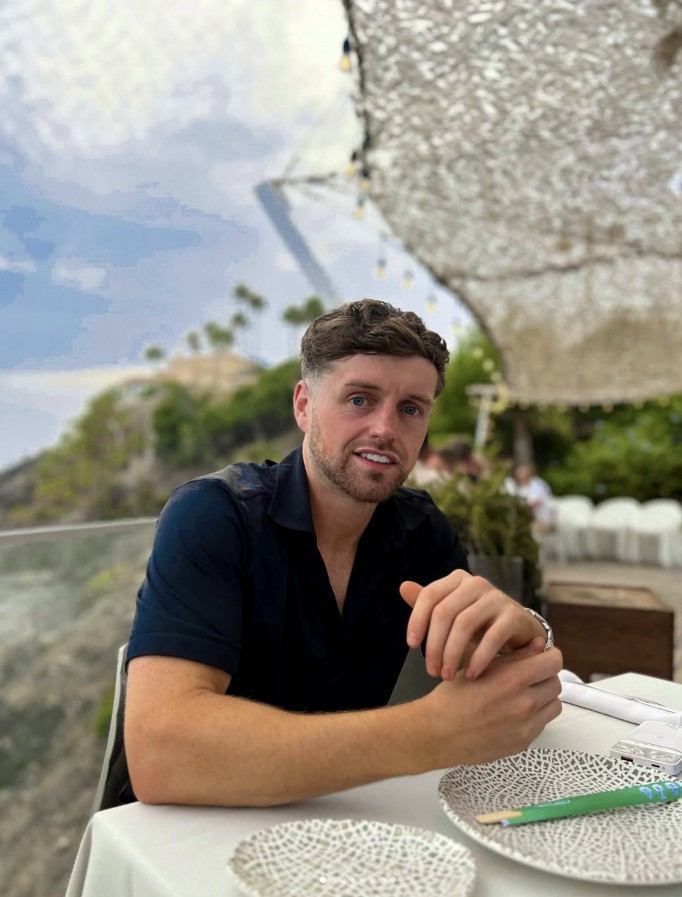

From a single unit in Bury to homes and businesses across the United Kingdom.
Tom Letcher founded Freedom Fire & Safety in August 2021, at the age of twenty-five.

Tom
Letcher
Tom Letcher founded Freedom Fire & Safety in August 2021 at the age of twenty-five. From a single unit on the Pilsworth Industrial Estate in Bury, the company now protects homes and businesses across the United Kingdom — supplying, installing and maintaining the equipment that fire safety law requires, and standing behind the paperwork that proves it.
A founder who built a compliance business on being straight with people
Tom Letcher started Freedom Fire & Safety Ltd in the summer of 2021, as sole director, with the company registered to a unit on an industrial estate in Bury, Greater Manchester. Five years on it employs a team across the group and serves clients nationwide — from single-site premises to multi-site portfolios, and from commercial landlords to private homeowners.
The business sits in an unglamorous corner of the economy where the consequences of cutting corners are measured in lives. Extinguishers that have not been serviced. Alarm panels nobody has tested. Risk assessments written to be filed rather than acted upon. Freedom Fire & Safety was built on the opposite proposition: certified work, documented properly, that stands up when an inspector or an insurer asks.
Tom to supply — personal background Two or three paragraphs. Your route into fire safety: what you did before 2021, what made you start the company rather than stay employed, and the moment you knew it would work. This is the part an assessment panel remembers, and it is the only part nobody else can write.Beyond the core services, the company has moved upstream into its own supply chain — sourcing from more than thirty vetted suppliers, working with production partners overseas, and tracking every order from factory to the UK warehouse through a system built in-house. That vertical reach is unusual for an independent firm of this size.
What Freedom Fire & Safety does
The company supplies, installs, services and maintains the equipment and documentation that keep a building compliant and its occupants safe.
Equipment
Fire extinguishers and emergency lighting — supply, installation, servicing and annual maintenance, with certification at every visit.
Detection
Fire alarm systems designed, installed, commissioned and maintained, so a building warns the people inside it before anyone smells smoke.
Assurance
Fire risk assessments in line with the Fire Safety Order, plus fire warden and extinguisher training, and the records that evidence both.
Clients range from landlords and property managers to schools, care homes, offices, retail, warehousing and manufacturing sites — and, unusually for the sector, private homeowners as well. The company trades nationwide from its Bury base.
Tom to confirm — service list Check the three pillars above match what you actually deliver, and add anything missing (fire doors, passive fire protection, sprinklers, dry risers). Remove anything you do not offer — an award assessment will test claims like these.Five years, from one unit to nationwide
-
27 August 2021
Freedom Fire & Safety Ltd incorporated
Registered in England and Wales, company number 13589467, with Tom Letcher appointed as director on the day of incorporation. He was twenty-five.
-
2022
First full trading year
TK — headline for 2022
Tom to supply What changed in your first full year? First major contract, first employee, first van on the road, turnover milestone. -
2023–2024
Building the team
TK — growth of the workforce and service area
Tom to supply Headcount at each stage, the move to nationwide coverage, any accreditations gained (BAFE SP101 / SP203, FIA, SafeContractor, CHAS, ISO 9001, NSI or SSAIB), and apprenticeships or qualifications you have funded. -
2025–2026
Into the supply chain
The company moved upstream, sourcing through a network of more than thirty vetted suppliers and working with overseas production partners, with every order tracked from factory floor to the UK warehouse through a system built in-house.
-
Today
The Freedom Group
Freedom Fire & Safety now sits under a group structure formed to build and hold further businesses in fire safety, protection and compliance.
How he runs it
1 · Fresh thinking. What do you do differently from the fire safety firm down the road? The in-house supply chain tracking is one genuine answer — what else?
2 · Growth and influence. Turnover and headcount trajectory, geographic reach, anything that has changed how others in the sector operate.
3 · Long-term vision. Where the group goes over five years, and why the holding structure exists.
4 · Resilience. A genuine setback and what you did about it. Panels trust a founder who names one.
Once those four are written, they replace this box and the page is complete.
TK — one sentence, in Tom's own voice, on why the work matters.
Compliance, responsibility and standards
Freedom Fire & Safety Ltd is a self-contained enterprise managing its own accounts, registered in England and Wales since 2021 and active on the register. Its filing history is public and current.
Tom to supply — governance evidence Confirm and expand: HMRC and Companies House filings up to date; the third-party accreditations the company holds and their reference numbers; insurance cover; how engineers are trained and re-certified; environmental measures (vehicle fleet, waste extinguisher disposal, packaging from the supply chain); and any community, charity or apprenticeship work. Each claim should have a document behind it.The company's own supply chain is subject to the same discipline: more than thirty suppliers are vetted before use, and every consignment is tracked from origin to the UK warehouse, giving full visibility of provenance.
The verified record
| Full name | Tom Letcher |
|---|---|
| Position | Director — appointed 27 August 2021 |
| Nationality | British |
| Company | Freedom Fire & Safety Ltd |
| Company number | 13589467 |
| Incorporated | 27 August 2021, England and Wales |
| Status | Active |
| Nature of business | SIC 84250 — Fire service activities |
| Registered office | Unit 19, Pilsworth Industrial Estate, Bury, BL9 8RE |
| Telephone | 0333 772 2723 |
| Website | freedom-fire.co.uk |
Source: Companies House register, verified 30 August 2026 — company 13589467.
Get in touch
Direct
TK — Tom's direct email
TK — mobile, if you want it public
Company
Registered office
Unit 19, Pilsworth Industrial Estate
Bury, Greater Manchester
BL9 8RE